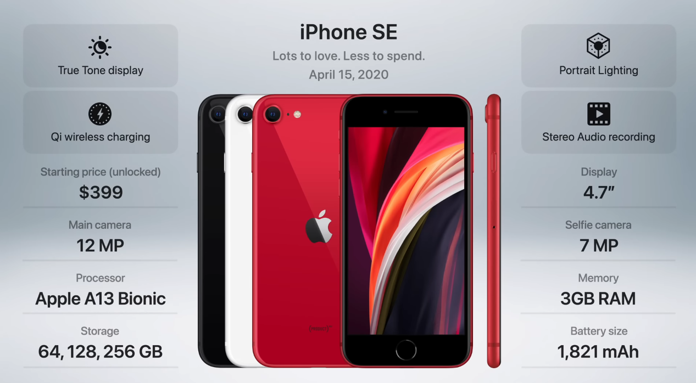

Generation 16.3: The iPhone SE (Mk. 2)
Release Date: April 15, 2020
Apple released a new iPhone SE in 2020, after a two-year hiatus. The original iPhone SE was released in 2016, and it was a small, affordable iPhone that resembled the iPhone 5. The new iPhone SE is also small and affordable, but it has the internals of the iPhone 11. The new iPhone SE has a 4.7-inch Retina display, the A13 Bionic chip, and a 12-megapixel rear camera. It also has Touch ID, which is a fingerprint sensor that is built into the home button. The new iPhone SE is a good option for people who want a small, affordable iPhone with the latest features. It is also a good option for people who prefer Touch ID over Face ID.
